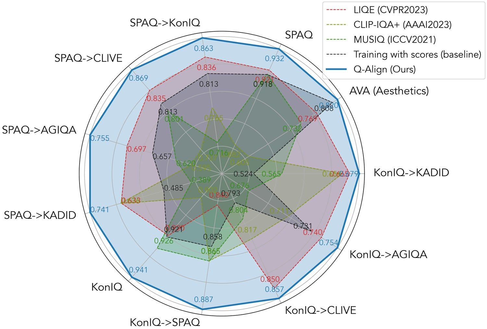
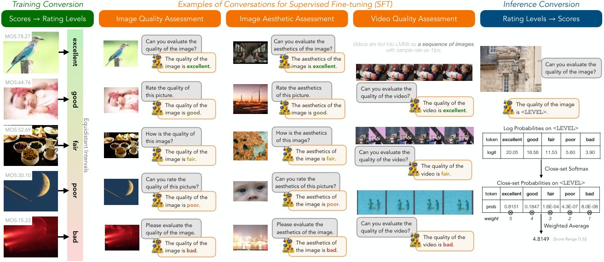
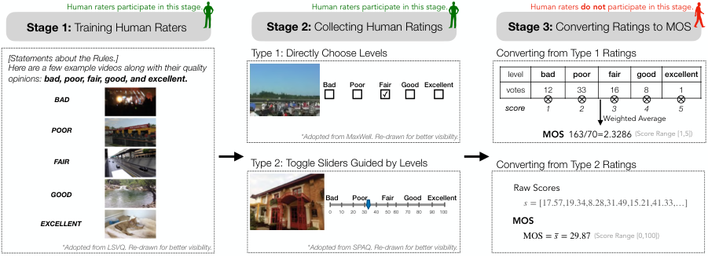
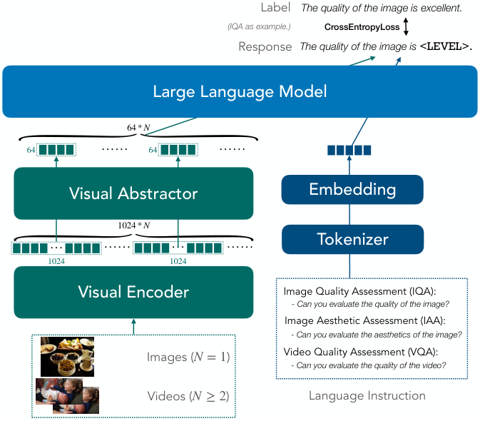

Q-Align: Teaching LMMs for Visual Scoring via Discrete Text-Defined Levels
The explosion of visual content available online underscores the requirement for an accurate machine assessor to robustly evaluate scores across diverse types of visual contents. While recent studies have demonstrated the exceptional potentials of large multi-modality models (LMMs) on a wide range of related fields, in this work, we explore how to teach them for visual rating aligned with human opinions. Observing that human raters only learn and judge discrete text-defined levels in subjective studies, we propose to emulate this subjective process and teach LMMs with text-defined rating levels instead of scores. The proposed Q-Align achieves state-of-the-art performance on image quality assessment (IQA), image aesthetic assessment (IAA), as well as video quality assessment (VQA) tasks under the original LMM structure. With the syllabus, we further unify the three tasks into one model, termed the OneAlign. In our experiments, we demonstrate the advantage of the discrete-level-based syllabus over direct-score-based variants for LMMs. Our code and the pre-trained weights are released at https://github.com/Q-Future/Q-Align.
There is always a need to score an image. From the early focus on factors related to compression, transmission, and image processing (Sheikh et al., 2005), to directly addressing user-generated content (Tu et al., 2021a) (e.g. photos and videos taken with smartphones (Fang et al., 2020)), and moving on to the recently popular AI-generated content (Li et al., 2023), at every stage, accurately evaluating visual content remains an indispensable need to the computer vision field. To address this need, from handcraft approaches (Mittal et al., 2013; Mittal et al., 2012) to deep-neural-network-based methods (Talebi & Milanfar, 2018; Zhang et al., 2020; Ke et al., 2021), the endeavor to improve the accuracies of visual assessors never stops. Nevertheless, while existing methods can already achieve remarkable accuracies on specific datasets by regressing from the mean opinion scores (MOS), the complicated factors that affect the final score in contrast with the limited capacity of these methods have resulted in their poor out-of-distribution (OOD) generalization abilities. This makes them struggle to accurately score novel types of content. Moreover, they usually experience compromised performance while handling different scoring scenarios (e.g. mixing multiple datasets) together, making it challenging to train a unified model for different situations.
给图像打分始终是一项刚需。从早期关注压缩、传输与图像处理相关因素（Sheikh 等，2005），到直接面向用户生成内容（Tu 等，2021a）（例如智能手机拍摄的照片与视频（Fang 等，2020）），再到近年流行的 AI 生成内容（Li 等，2023），在每个阶段，准确评估视觉内容都是计算机视觉领域不可或缺的需求。为满足这一需求，从手工特征方法（Mittal 等，2013；Mittal 等，2012）到基于深度神经网络的方法（Talebi & Milanfar，2018；Zhang 等，2020；Ke 等，2021），提升视觉评估器准确性的努力从未停止。然而，现有方法虽已能通过从平均意见分数（MOS）回归在特定数据集上取得可观精度，但影响最终分数的因素复杂，而这些方法的容量有限，导致其分布外（OOD）泛化能力较差，难以准确评估新型内容。此外，它们在同时处理不同评分场景（例如混合多个数据集）时性能往往下降，使得训练一个适应不同场景的统一模型颇具挑战。

图 1：Q-Align（用文本定义的等级训练 LMM）与其基线（用分数训练 LMM）及现有最优方法的对比，在跨数据集设置下提升尤为显著。指标为 (SRCC+PLCC)/2。

图 2：Q-Align 的教学方案。基于“用文本定义的评分等级教导 LMM”这一总体原则，我们通过将图像质量评估（IQA）、图像美学评估（IAA）与视频质量评估（VQA）数据集中已有的分数标签加以转换，生成指令—回答对。推理时，通过模拟从标注者处收集平均意见分数（MOS）的过程，我们提取各评分等级的闭集概率并做加权平均，得到 LMM 预测的分数。
In contrast, recently emerging large multi-modality models (LMMs) have shown very strong background knowledge on a wide range of visual and language disciplines. They can well understand high-level visual contents (Liu et al., 2023a; Ye et al., 2023a), and effectively perceive low-level visual attributes (Zhang et al., 2023a), and more importantly possess reasoning ability benefited from their strong language decoder (Liu et al., 2023c). While these abilities are proved fundamental to a more accurate and robust visual scorer, existing studies (Wu et al., 2023e) have proven that they still fall short on accurately predicting scores that are consistent with human preferences. Therefore, in our study, we investigate the important one last mile for them:
相比之下，近期兴起的大模态模型（LMM）在广泛的视觉与语言学科上展现出极强的背景知识。它们能很好地理解高层视觉内容（Liu 等，2023a；Ye 等，2023a），有效感知低层视觉属性（Zhang 等，2023a）；更重要的是，借助强大的语言解码器具备了推理能力（Liu 等，2023c）。这些能力已被证明是构建更准确、更稳健视觉评分器的基础，但已有研究（Wu 等，2023e）表明，它们在准确预测符合人类偏好的分数上仍有不足。因此，本文研究其中关键的“最后一公里”问题：
How to teach LMMs to predict scores aligned with human?
如何教会 LMM 预测与人类一致的分数？
To design the most effective syllabus, we reviewed the standard process for collecting MOS from human (itu, 2000): First, organizers need to define several rating levels (e.g. ‘excellent’, ‘fair’, ‘bad’) and select examples for each level, aligning human annotators to the standards of each level. Referring to these levels, humans mark their ratings either through a choice button or a grade-guided slider. In other words, human annotators never learns or marks a specific score (e.g. 3.457 in range [1,5]). Instead, these final scores are derived from the distributions of human ratings.
为了设计最有效的教学方案，我们回顾了从人类处收集 MOS 的标准流程（itu，2000）：首先，组织者需要定义若干评分等级（如“excellent”“fair”“bad”），并为每个等级挑选示例，使人类标注者对各等级的标准达成共识。参照这些等级，标注者通过选择按钮或等级引导的滑块给出评价。换言之，人类标注者从不学习或标注某个具体分数（如 [1,5] 区间内的 3.457），这些最终分数是从人类评分的分布中推导出来的。
Meanwhile, as observed by recent explorations (Wu et al., 2023e), LMMs have similar behaviour patterns to humans while instructed to score: they prefer to respond with text-defined levels (good/poor); even while explicitly requested to predict numerical scores, the accuracy is significantly lower compared to deriving from levels. Therefore, it might not be optimal to directly tune LMMs to output scores.
与此同时，近期探索（Wu 等，2023e）观察到，LMM 在被要求打分时表现出与人类相似的行为模式：它们倾向于用文本定义的等级（good/poor）作答；即便明确要求预测数值分数，准确率也显著低于由等级推导的结果。因此，直接微调 LMM 输出分数可能并非最优选择。
Given the above observations, we propose a human-emulating syllabus to teach LMMs for visual scoring (the Q-Align), as shown in Fig. 2. During training, simulating the process of training human annotators, we convert the MOS values to five text-defined rating levels (itu, 2000) (excellent/good/fair/poor/bad), which are further formatted into instruction-response pairs, to conduct visual instruction tuning (Liu et al., 2023b) on LMMs. During inference, simulating the strategy to collect MOS from human ratings, we extract the log probabilities on different rating levels, employ softmax pooling to obtain the close-set probabilities of each level. Finally, we get the LMM-predicted score from a weighted average on the close-set probabilities.
基于上述观察，我们提出一种模拟人类的教学方案来教导 LMM 进行视觉评分，即 Q-Align，如图 2 所示。训练阶段，我们模拟培训人类标注者的过程，将 MOS 值转换为五个文本定义的评分等级（itu，2000）（excellent/good/fair/poor/bad），再将其格式化为指令—回答对，对 LMM 做视觉指令微调（Liu 等，2023b）。推理阶段，我们模拟从人类评分中收集 MOS 的策略，提取不同评分等级上的对数概率，用 softmax 池化得到每个等级的闭集概率，最后对闭集概率做加权平均，得到 LMM 预测的分数。
While the proposed syllabus requires only existing scores and uses even less information, it has proved far better performance than using scores as learning targets. It reaches state-of-the-art performance on 12 datasets of three representative visual scoring tasks with notable improvements: image quality assessment (IQA), image aesthetic assessment (IAA), and video quality assessment (VQA), with especially significant improvements on unseen (OOD) datasets.
该教学方案只需利用已有的分数、使用的信息甚至更少，效果却远优于以分数作为学习目标的做法。它在图像质量评估（IQA）、图像美学评估（IAA）与视频质量评估（VQA）三项代表性视觉评分任务的 12 个数据集上达到最优性能，提升显著，在未见过（OOD）的数据集上尤为突出。
Besides achieving state-of-the-art, the proposed Q-Align also have two exciting characteristics: 1) Data Efficiency. It can be competitive with current state-of-the-arts with only 1/5 (IQA) or even 1/10 (IAA) data used. This could be especially useful as data collection is rather expensive for visual scoring tasks. 2) Free Combination of Datasets. With the strong capacity of LMMs, unlike existing methods that usually face performance drop while mixing datasets (Zhang et al., 2023b), it can freely combine different datasets for training even from different tasks (i.e. IQA and VQA), and receive positive performance gain. With this characteristic, we propose the OneAlign, which combines IQA, IAA and VQA datasets for training. The OneAlign is exceptionally capable on all three tasks under one unified model, with further enhanced generalization on unseen datasets.
除达到最优性能外，所提出的 Q-Align 还有两项令人振奋的特性：1）数据高效。仅需使用 1/5（IQA）乃至 1/10（IAA）的数据，即可与当前最优方法竞争。考虑到视觉评分任务的数据采集成本相当高昂，这一点尤其实用。2）数据集自由组合。借助 LMM 的强大容量，与现有方法在混合数据集时通常面临性能下降（Zhang 等，2023b）不同，Q-Align 可以自由组合不同数据集训练，甚至混合不同任务（即 IQA 与 VQA），并获得正向的性能增益。基于这一特性，我们提出 OneAlign，将 IQA、IAA 与 VQA 的数据集合并训练。OneAlign 在单一统一模型下于三项任务上均表现优异，在未见过的数据集上泛化能力进一步增强。
Our core contributions can be summarized as three-fold:
我们的核心贡献可概括为三个方面：
An effective syllabus to teach LMMs to score. Emulating from human opinion collection process, the proposed discrete-level-based syllabus proves its effectiveness over the score-based variant (+10%). We expect it a general strategy for training LMMs to score.
• 一套教会 LMM 打分的有效教学方案。该方案模拟人类意见收集过程，基于离散等级的教学方案相比基于分数的变体提升 10%，我们期待它成为训练 LMM 打分的通用策略。
A family of more capable visual assessors. The proposed Q-Align achieves state-of-the-art accuracy and generalization ability on multiple visual assessing tasks. It also proves competitive performance with fewer data used, and can converge with fewer training iterations.
• 一系列能力更强的视觉评估器。所提出的 Q-Align 在多个视觉评估任务上达到最优的准确率与泛化能力，在使用更少数据时仍具竞争力，并能以更少的训练迭代收敛。
A unified model for visual scoring. With IQA, IAA, and VQA effectively learned independently under the same structure, we further propose OneAlign, that unifies all three tasks under one model. We hope this may open a new paradigm for visual scoring tasks.
• 一个统一的视觉评分模型。在 IQA、IAA 与 VQA 于同一结构下各自有效学习的基础上，我们进一步提出 OneAlign，将三项任务统一到一个模型中。我们希望这能为视觉评分任务开启新的范式。
Image quality assessment (IQA) mainly focuses on the impact of distortions and other quality issues in images on human perception. Early IQA algorithms usually operate on handcraft features following the prior knowledge of statistics disciplines (Wang et al., 2004; Mittal et al., 2012; Mittal et al., 2013). As distortion diversifies and visual content becomes more complex, data-driven end-to-end deep neural networks are increasingly applied in the IQA field, as represented by NIMA (Talebi & Milanfar, 2018), DBCNN (Zhang et al., 2020), and HyperIQA (Su et al., 2020). Following this path, MUSIQ (Ke et al., 2021) designs a multi-scale input structure that advances the accuracy on IQA via transformers. In recent years, several methods have investigated the vision-language correspondence embedded in CLIP (Radford et al., 2021) to improve generalization ability in IQA. Among them, CLIP-IQA+ (Wang et al., 2022) designs a few-shot learning scheme via CoOp (Zhou et al., 2022), and LIQE (Zhang et al., 2023b) further develops a multitask learning scheme based on CLIP. Nevertheless, they typically rely on visual-text similarity to predict quality scores, which limits their performance to be slightly inferior compared with pure visual methods. Instead, the proposed Q-Align can significantly advance state-of-the-arts on IQA, while simultaneously further improving OOD generalization ability.
图像质量评估（IQA）主要关注失真及其他质量问题对图像人类感知的影响。早期 IQA 算法通常依据统计学科的先验知识，在手工特征上运算（Wang 等，2004；Mittal 等，2012；Mittal 等，2013）。随着失真类型日益多样、视觉内容愈发复杂，数据驱动的端到端深度神经网络在 IQA 领域的应用不断增加，代表工作有 NIMA（Talebi & Milanfar，2018）、DBCNN（Zhang 等，2020）与 HyperIQA（Su 等，2020）。沿此路径，MUSIQ（Ke 等，2021）设计了多尺度输入结构，借助 transformer 提升了 IQA 精度。近年来，若干方法利用 CLIP（Radford 等，2021）中蕴含的视觉—语言对应关系来改善 IQA 的泛化能力，其中 CLIP-IQA+（Wang 等，2022）通过 CoOp（Zhou 等，2022）设计了少样本学习方案，LIQE（Zhang 等，2023b）进一步提出了基于 CLIP 的多任务学习方案。然而，它们通常依赖视觉—文本相似度预测质量分数，性能因而略逊于纯视觉方法。相比之下，Q-Align 能显著推进 IQA 的最优水平，同时进一步提升 OOD 泛化能力。
In comparison with IQA, image aesthetic assessment (IAA) (Murray et al., 2012) is a more complicated task for visual scoring. While visual quality is also considered influential to visual aesthetics, the higher-level visual attributes, such as content, lighting, color, composition (Kong et al., 2016) are considered more important for IAA. As a result, deep-neural-network-based methods predominate IAA, such as NIMA and MLSP (Hosu et al., 2019). Similar as IQA, VILA (Ke et al., 2023) advances IAA performance by learning vision-language correspondence between images and aesthetic comments (Ghosal et al., 2019) through a joint constrastive and captioning pretraining (Yu et al., 2022). Based on LMMs with rich prior knowledge, the proposed Q-Align can remarkably outperform CLIP-based approaches without extra pre-training.
与 IQA 相比，图像美学评估（IAA）（Murray 等，2012）是更为复杂的视觉评分任务。视觉质量虽对视觉美学有影响，但内容、光照、色彩、构图（Kong 等，2016）等更高层的视觉属性被认为对 IAA 更为重要。因此，基于深度神经网络的方法在 IAA 中占主导地位，如 NIMA 与 MLSP（Hosu 等，2019）。与 IQA 类似，VILA（Ke 等，2023）通过联合对比与描述的预训练（Yu 等，2022）学习图像与美学评论（Ghosal 等，2019）之间的视觉—语言对应关系，提升了 IAA 性能。基于具备丰富先验知识的 LMM，Q-Align 无需额外预训练即可显著超越基于 CLIP 的方法。

图 3：[洞察 1] 人类如何评分？典型流程包含三个阶段：（1）用文本定义的评分等级培训评分者。模拟这一过程，我们为 LMM 提出基于评分等级的教学方案。（2）收集人类评分。评分者选择等级（类型 1）或拖动等级引导的滑块打分（类型 2），两种方式都不直接输入分数。（3）通过加权平均把初始评分转换为 MOS。沿用这一阶段，我们为 LMM 提出基于概率的推理方式以预测最终分数。
Named as video quality assessment (VQA), the focus of this task is also kind of complicated, that several studies have claimed that scores are not only affected by quality issues, but also contents (Li et al., 2019), and even aesthetics (Wu et al., 2023d). Similar as IQA, while traditional approaches on VQA are typically based on handcraft features, e.g. TLVQM (Korhonen, 2019), VIDEVAL (Tu et al., 2021a), and RAPIQUE (Tu et al., 2021b), recent deep-learning-based methods, such as VSFA (Li et al., 2019), BVQA (Li et al., 2022), DisCoVQA (Wu et al., ) and SimpleVQA (Sun et al., 2022), have shown much better performance and more robust OOD generalization. These efforts are further explored by FAST-VQA (Wu et al., 2022; Wu et al., 2023a), which proposes efficient end-to-end training to further advance VQA performance. Nevertheless, while the goal of VQA is similar to IQA (or IAA), the need to input videos has hindered methods to tackle this task with the same modeling structure as image scoring approaches. A typical example is the CLIP-based attempts: as CLIP is image-based, though it can achieve good zero-shot VQA capabilities through a frame-by-frame inference (Wu et al., 2023b), training CLIP-based methods on VQA datasets is extremely challenging (Wu et al., 2023c) and performs worse than specially-designed VQA models. In the proposed Q-Align, we utilize the language decoder to assemble videos as sequences of frames, so as to unify VQA with IQA/IAA under one structure, outperforming complicated specifically-designed architectures.
视频质量评估（VQA）的关注点同样复杂，若干研究指出分数不仅受质量问题影响，还受内容（Li 等，2019）乃至美学（Wu 等，2023d）影响。与 IQA 类似，VQA 的传统方法通常基于手工特征，如 TLVQM（Korhonen，2019）、VIDEVAL（Tu 等，2021a）与 RAPIQUE（Tu 等，2021b）；近期的深度学习方法，如 VSFA（Li 等，2019）、BVQA（Li 等，2022）、DisCoVQA（Wu 等，）与 SimpleVQA（Sun 等，2022），则表现出更好的性能与更稳健的 OOD 泛化。FAST-VQA（Wu 等，2022；Wu 等，2023a）进一步提出高效的端到端训练，推进了 VQA 性能。然而，尽管 VQA 的目标与 IQA（或 IAA）相似，输入视频的需求阻碍了人们用与图像评分相同的建模结构来处理该任务。基于 CLIP 的尝试便是典型例子：由于 CLIP 面向图像，虽然它能通过逐帧推理获得不错的零样本 VQA 能力（Wu 等，2023b），但在 VQA 数据集上训练基于 CLIP 的方法极具挑战（Wu 等，2023c），效果也不如专门设计的 VQA 模型。在 Q-Align 中，我们利用语言解码器把视频组装为帧序列，从而在一个结构下统一 VQA 与 IQA/IAA，性能优于复杂的专用架构。
Some recent investigations have discussed the possibilities for adopting Large Multi-modality Models (LMMs) for visual scoring. Namely, the Q-Bench (Wu et al., 2023e) proposes a binary softmax strategy, enabling LMMs to predict quantifiable quality scores by extracting the softmax pooling result on logits of two frequent tokens (good/poor). Based on this strategy, the Q-Instruct (Wu et al., 2023f) notices that fine-tuning with text question-answering on related low-level queries can also improve visual scoring abilities of LMMs. Given insights from these studies, we design the Q-Align syllabus to systematically emulate the human rating and post-processing in visual scoring. Moreover, we demonstrate that the binary softmax strategy in Q-Bench is a simplified version equivalent to the collection process of MOS values from human ratings. Our experiments prove that with appropriate alignment strategies, LMMs can be more capable and robust visual scorers with the same (and even less) data used.
近期的一些研究探讨了采用大模态模型（LMM）做视觉评分的可能性。其中，Q-Bench（Wu 等，2023e）提出二值 softmax 策略，通过对两个高频词元（good/poor）的 logits 做 softmax 池化，使 LMM 能够预测可量化的质量分数。在此基础上，Q-Instruct（Wu 等，2023f）发现，用低层相关查询的文本问答做微调同样能提升 LMM 的视觉评分能力。借鉴这些研究的洞见，我们设计了 Q-Align 教学方案，系统性地模拟视觉评分中的人类评分与后处理过程。此外，我们证明 Q-Bench 中的二值 softmax 策略等价于从人类评分收集 MOS 值这一过程的简化版本。实验表明，借助恰当的对齐策略，LMM 在使用相同（甚至更少）数据时，可以成为能力更强、更稳健的视觉评分器。
In this section, we elaborate on the proposed Q-Align. We start with our methodology to teach LMMs with rating levels (Sec. 3.1), and then discuss the proposed conversion strategy between rating levels and scores (Sec. 3.2). Afterwards, we introduce the unified structure (Sec. 3.3) for images and videos, and conversation formats for each task (Sec. 3.4).
本节详述所提出的 Q-Align。我们先介绍用评分等级教导 LMM 的方法（第 3.1 节），再讨论评分等级与分数之间的转换策略（第 3.2 节），随后介绍图像与视频的统一结构（第 3.3 节）以及各任务的对话格式（第 3.4 节）。
To design the syllabus on training LMMs to score, we first review the process of collecting human opinions (Fig. 3). In general, the collection includes three stages as follows:
为设计训练 LMM 打分的教学方案，我们先回顾人类意见的收集过程（图 3）。总体上，该过程包含以下三个阶段：
Stage 1: Training Human Raters. As the standard process for collecting human opinions (itu, 2000), the training process on human raters with the rating rules is vital, including aligning human raters with one or more examples for each rating level (Fig. 3 left, we take LSVQ (Ying et al., 2021) as an example). During this process, precise quality scores of the examples were not displayed to human raters.
阶段 1：培训人类评分者。作为收集人类意见的标准流程（itu，2000），用评分规则培训评分者至关重要，其中包括让评分者就每个评分等级与一个或多个示例对齐（图 3 左，此处以 LSVQ（Ying 等，2021）为例）。在此过程中，示例的精确质量分数并不向评分者展示。
Stage 2: Collecting human ratings. After training human raters, the core stage is to collect initial human ratings (Fig. 3 center). In general, human raters may provide their opinions in two types: 1) Directly choose rating levels. 2) Toggle the slider to generate a score. In either way, human raters do not need to directly input the scores to provide their opinions.
阶段 2：收集人类评分。培训完成后，核心环节是收集初始的人类评分（图 3 中）。一般而言，评分者可通过两种方式表达意见：1）直接选择评分等级；2）拖动滑块生成分数。无论哪种方式，评分者都无需直接输入分数来表达意见。
Stage 3: Converting human ratings to MOS. As in Fig. 3 right, initial ratings are averaged into MOS in visual scoring datasets. Human raters do not participate in this stage.
阶段 3：将人类评分转换为 MOS。如图 3 右所示，初始评分在视觉评分数据集中被平均为 MOS，评分者不参与这一阶段。
During all three stages, human raters are neither trained, nor instructed to predict a score. This process is adopted because, in everyday life, when asked for an evaluation, people tend to respond with qualitative adjectives (for example, fine, poor, excellent) rather than numerical ratings (e.g. 8.75, 1.08, 6.54). Thus, conducting the visual scoring tasks with rating levels utilizes this innate ability of humans (providing qualitative adjectives) to minimize their cognitive load, and improve the outcomes of subjective studies.
在这三个阶段中，人类评分者既未被培训、也未被要求预测分数。之所以采用这一流程，是因为日常生活中人们在被要求评价时，倾向于用定性形容词作答（例如 fine、poor、excellent），而非数值评分（如 8.75、1.08、6.54）。因此，用评分等级开展视觉评分任务，正是利用了人类提供定性形容词这一天然能力，既降低认知负荷，也提升主观实验的质量。
表 1：[洞察 2] LMM 如何评分？LMM 对 LIVE Challenge 中 1168 张图像在指令“Rate the quality of the image”下的回答统计。LMM 倾向于用定性形容词作答。
| Model / Frequency | Qualitative Adjectives | Numerical Ratings |
|---|---|---|
| Adapter-V2 (Gao et al., 2023) | 96% (1120/1168) | 4% (48/1168) |
| LLaVA-v1.5 (Liu et al., 2023a) | 100% (1168/1168) | 0% (0/1168) |
| mPLUG-Owl-2 (Ye et al., 2023b) | 100% (1168/1168) | 0% (0/1168) |
| InstructBLIP (Dai et al., 2023) | 99% (1156/1168) | 1% (12/1168) |
| Shikra (Chen et al., 2023) | 100% (1168/1168) | 0% (0/1168) |
After analyzing the human opinion collection process, we further discover the “innate ability” of LMMs. Theoretically, fundamentally designed to understand and generate human-like text, LMMs should share similar behaviour patterns with humans. To validate this, we prompt five LMMs11 1 None of them are explicitly trained for any visual rating tasks. on the instruction as follows, and count their response statistics:
在分析了人类意见收集过程之后，我们进一步发现 LMM 的“天然能力”。理论上，LMM 的设计初衷便是理解并生成类人文本，理应与人类具有相似的行为模式。为验证这一点，我们用如下指令提示五个 LMM11 1 这些模型均未针对任何视觉评分任务做过显式训练。，并统计它们的回答分布：
<img> Rate the quality of the image.
<img> 请评价这幅图像的质量。
As results shown in Tab. 1, before specific alignment, LMMs predominantly respond with qualitative adjectives. Thus, if we use scores as the learning objective for LMMs, they need to first formally learn to output scores, and then learn how to score accurately. To avoid this additional formatting cost, we choose rating levels instead as the targets of Q-Align.
如表 1 所示，在专门对齐之前，LMM 的回答以定性形容词为主。因此，若以分数作为 LMM 的学习目标，它们需要先从形式上学会输出分数，再学习如何准确评分。为避免这一额外的格式化代价，我们改用评分等级作为 Q-Align 的目标。
Based on the general methodology to teach LMMs with rating levels, we further discuss how to convert the scores in the existing datasets to discrete rating levels during training, and how to obtain scores from LMMs during inference.
在用评分等级教导 LMM 这一总体方法的基础上，我们进一步讨论训练时如何把现有数据集中的分数转换为离散的评分等级，以及推理时如何从 LMM 得到分数。
During the training process, we convert the scores into discrete rating levels. Since adjacent levels in human rating are inherently equidistant (either Type 1 or Type 2, see Fig. 3), we also adopt equidistant intervals to convert scores into rating levels. Specifically, we uniformly divide the range between between the highest score () and lowest score () into five distinct intervals, and assign the scores in each interval as respective levels:
训练过程中，我们把分数转换为离散的评分等级。由于人类评分中相邻等级本质上是等距的（类型 1 或类型 2 均如此，见图 3），我们也采用等距区间把分数转换为评分等级。具体而言，我们把最高分（）与最低分（）之间的范围均匀划分为五个区间，并把落入各区间的分数赋予相应的等级：
| (1) |
where { are the standard text rating levels as defined by ITU (itu, 2000).
其中 { 为 ITU（itu，2000）定义的标准文本评分等级。
表 2：Q-Align 在 5 个训练数据集上训练转换（分数 评分等级）的精度。指标为 SRCC/PLCC。
| Conversion | KonIQ | SPAQ | KADID | AVA | LSVQ |
|---|---|---|---|---|---|
| Scores Levels | 0.952/0.961 | 0.969/0.968 | 0.979/0.982 | 0.920/0.930 | 0.940/0.944 |
As the conversion mapping discussed above is a multi-to-one mapping, it unavoidably slightly compromises the ground truth precision. In Tab. 2, we record the conversion precision on the five datasets that we used for training Q-Align, that all conversion retains around 0.95 linear correlation (PLCC) with the scores. Considering that MOS values inherently have some randomness under such precision range, we believe that the converted rating levels are sufficiently accurate as training labels.
由于上述转换映射 是多对一映射，不可避免地会轻微损失真值精度。表 2 记录了我们用于训练 Q-Align 的五个数据集上的转换精度，所有转换都与分数保持约 0.95 的线性相关（PLCC）。考虑到 MOS 值在该精度范围内本身存在一定随机性，我们认为转换得到的评分等级作为训练标签已足够准确。
After training, we need to convert the rating levels back to scores. Primarily, simulating the post-processing on human ratings (Fig. 3 right), we first define the reverse mapping from text-defined rating levels back to scores, as follows:
训练完成后，需要把评分等级还原为分数。首先，模拟人类评分的后处理（图 3 右），我们定义从文本定义的评分等级回到分数的反向映射 ，如下：
| (2) |
For instance, fair is converted as score 3, and bad as 1.
例如，fair 转换为分数 3，bad 转换为 1。
For human opinion collection (Type 1), the MOS values are calculated via the weighted average of the converted scores and frequencies for each level: . For LMMs, we substitute the with the LMM-predicted probabilities for each rating level. Given that the predicted <LEVEL> token of LMMs is the probability distribution (denoted as ) on all possible tokens of the language model, we conduct a close-set softmax on {} to get the probabilities for each level, that for all sum as 1:
对于人类意见收集（类型 1），MOS 值由转换后的分数与频率 的加权平均计算得到：。对于 LMM，我们把 替换为 LMM 对每个评分等级的预测概率。鉴于 LMM 预测的 <LEVEL> 词元是语言模型所有可能词元上的概率分布（记为 ），我们在 {} 上做闭集 softmax，得到每个等级的概率 ，使得 对所有 之和为 1：
| (3) |
and the final predicted scores of LMMs are denoted as
LMM 最终预测的分数记为
| (4) |
The inference conversion is theoretically equivalent to the MOS collection process from a set of human ratings in levels. Moreover, it represents the general expression form of the binary softmax strategy () as proposed by Wu et al. (2023e), which can be considered as a simplified version of Eq. 4 with only two rating levels.
该推理转换在理论上等价于从一组人类等级评分中收集 MOS 的过程。此外，它也是 Wu 等（2023e）提出的二值 softmax 策略（）的一般表达形式，后者可视为式 4 在仅有两个评分等级时的简化版本。

图 4：Q-Align 的模型结构。通过视觉抽象器把每幅图像的词元数降至 64，它在同一通用结构下统一了图像与视频（作为图像序列）。
The model structure of the Q-Align (Fig. 4) is based on the recently-published open-source LMM, mPLUG-Owl-2 (Ye et al., 2023b), which has proven exceptional visual perception ability as well as good language understanding ability. In the adopted structure, despite the visual encoder to convert images into embeddings, an additional visual abstractor further significantly reduces the token numbers per image (). Under the context length for LLaMA2 (Touvron et al., 2023), we can feed as much as 30 images (2 without the abstractor) together during supervised fine-tuning (SFT). This allows us to input a video as a sequence of images to LMM, and unify image (IQA, IAA) and video (VQA) scoring tasks under one structure. The Q-Align uses common GPT (Radford et al., 2019) loss, i.e. cross-entropy between labels and output logits.
Q-Align 的模型结构（图 4）基于近期发布的开源 LMM——mPLUG-Owl-2（Ye 等，2023b），该模型已被证明具备出色的视觉感知能力与良好的语言理解能力。在所采用的结构中，除用视觉编码器把图像转换为嵌入外，额外的视觉抽象器还大幅减少了每幅图像的词元数（）。在 LLaMA2（Touvron 等，2023）的 上下文长度下，监督微调（SFT）时我们最多可同时输入 30 幅图像（若不使用抽象器则仅为 2 幅）。这使我们能够把视频作为图像序列输入 LMM，从而在一个结构下统一图像（IQA、IAA）与视频（VQA）评分任务。Q-Align 采用常见的 GPT（Radford 等，2019）损失，即标签与输出 logits 之间的交叉熵。
表 3：Q-Align 与 FewShot-Q-Align 在图像质量评估（IQA）上的性能。我们采用 KonIQ 与 SPAQ（均为真实场景摄影）作为训练集，并在多个测试集上评估。跨数据集评估用 标注。
| Training Set: KonIQ | Testing Set: | KonIQ | SPAQ | LIVE Challenge | AGIQA-3K | KADID-10k | |||||
|---|---|---|---|---|---|---|---|---|---|---|---|
| Method | #Training | SRCC | PLCC | SRCC | PLCC | SRCC | PLCC | SRCC | PLCC | SRCC | PLCC |
| NIMA (TIP 2018) | 7K (70%) | 0.859 | 0.896 | 0.856 | 0.838 | 0.771 | 0.814 | 0.654 | 0.715 | 0.535 | 0.532 |
| DBCNN (TCSVT 2020) | 7K (70%) | 0.875 | 0.884 | 0.806 | 0.812 | 0.755 | 0.773 | 0.641 | 0.730 | 0.484 | 0.497 |
| HyperIQA (CVPR 2020) | 7K (70%) | 0.906 | 0.917 | 0.788 | 0.791 | 0.749 | 0.772 | 0.640 | 0.702 | 0.468 | 0.506 |
| MUSIQ (ICCV 2021) | 7K (70%) | 0.929 | 0.924 | 0.863 | 0.868 | 0.830 | 0.789 | 0.630 | 0.722 | 0.556 | 0.575 |
| CLIP-IQA+ (AAAI 2023) | 7K (70%) | 0.895 | 0.909 | 0.864 | 0.866 | 0.805 | 0.832 | 0.685 | 0.736 | 0.654 | 0.653 |
| LIQE (CVPR 2023) | 7K (70%) | 0.928 | 0.912 | 0.833 | 0.846 | 0.870 | 0.830 | 0.708 | 0.772 | 0.662 | 0.667 |
| FewShot-Q-Align (Ours) | 2K (20%) | 0.903 | 0.901 | 0.871 | 0.860 | 0.840 | 0.845 | 0.740 | 0.791 | 0.607 | 0.589 |
| Q-Align (Ours) | 7K (70%) | 0.940 | 0.941 | 0.887 | 0.886 | 0.860 | 0.853 | 0.735 | 0.772 | 0.684 | 0.674 |
| Training Set: SPAQ | Testing Set: | KonIQ | SPAQ | LIVE Challenge | AGIQA-3K | KADID-10k | |||||
|---|---|---|---|---|---|---|---|---|---|---|---|
| Method | #Training | SRCC | PLCC | SRCC | PLCC | SRCC | PLCC | SRCC | PLCC | SRCC | PLCC |
| NIMA (TIP 2018) | 8.8K (80%) | 0.733 | 0.788 | 0.907 | 0.910 | 0.733 | 0.785 | 0.534 | 0.630 | 0.399 | 0.480 |
| DBCNN (TCSVT 2020) | 8.8K (80%) | 0.731 | 0.758 | 0.908 | 0.913 | 0.702 | 0.748 | 0.459 | 0.518 | 0.490 | 0.508 |
| Fang et al. (CVPR 2020) | 8.8K (80%) | 0.714 | 0.742 | 0.908 | 0.909 | 0.798 | 0.762 | 0.570 | 0.649 | 0.381 | 0.448 |
| MUSIQ (ICCV 2021) | 8.8K (80%) | 0.753 | 0.680 | 0.917 | 0.921 | 0.813 | 0.789 | 0.564 | 0.675 | 0.349 | 0.429 |
| CLIP-IQA+ (AAAI 2023) | 8.8K (80%) | 0.753 | 0.777 | 0.881 | 0.883 | 0.719 | 0.755 | 0.577 | 0.614 | 0.633 | 0.638 |
| LIQE (CVPR 2023) | 8.8K (80%) | 0.826 | 0.847 | 0.922 | 0.919 | 0.805 | 0.866 | 0.672 | 0.722 | 0.639 | 0.627 |
| FewShot-Q-Align (Ours) | 2.2K (20%) | 0.792 | 0.826 | 0.909 | 0.911 | 0.823 | 0.834 | 0.702 | 0.772 | 0.685 | 0.678 |
| Q-Align (Ours) | 8.8K (80%) | 0.848 | 0.879 | 0.930 | 0.933 | 0.865 | 0.873 | 0.723 | 0.786 | 0.743 | 0.740 |
In this section, we define the conversation formats for each task. Denote the image token as <img>, the converted level for the image or video as <level>, the exemplar conversation formats for each task are as follows:
本节定义各任务的对话格式。记图像词元为 <img>，图像或视频转换后的等级为 <level>，各任务的示例对话格式如下：
Image Quality Assessment (IQA)
#User: <img> Can you evaluate the quality of the image?
#Assistant: The quality of the image is <level>.
图像质量评估（IQA）#User: <img> 你能评价一下这幅图像的质量吗？#Assistant: 这幅图像的质量为 <level>。
Image Aesthetic Assessment (IAA)
#User: <img> How is the aesthetics of the image?
#Assistant: The aesthetics of the image is <level>.
图像美学评估（IAA）#User: <img> 这幅图像的美感如何？#Assistant: 这幅图像的美感为 <level>。
Video Quality Assessment (VQA)
#User: <img> Rate the quality of the video.
#Assistant: The quality of the video is <level>.
视频质量评估（VQA）#User: <img> 请评价这个视频的质量。#Assistant: 这个视频的质量为 <level>。
The user queries are randomly chosen from a group of paraphrases as an augmentation. Following Zheng et al. (2023), only the LMM responses (after #Assistant:) are supervised.
用户查询从一组改写句中随机选取，作为数据增强。沿用 Zheng 等（2023）的做法，仅对 LMM 的回答（#Assistant: 之后的部分）施加监督。
表 4：Q-Align 在图像质量评估（IQA）上的混合数据实验。我们把每个训练集合组合对应的数据集内测试集用灰色背景标注，其余为跨数据集设置。混合数据集显著提升了 IQA 在未见过数据集上的性能。
| Testing Set: | KonIQ | SPAQ | KADID-10k | LIVE Challenge | AGIQA-3K | LIVE | CSIQ | |||||||
|---|---|---|---|---|---|---|---|---|---|---|---|---|---|---|
| Training Set: | SRCC | PLCC | SRCC | PLCC | SRCC | PLCC | SRCC | PLCC | SRCC | PLCC | SRCC | PLCC | SRCC | PLCC |
| KonIQ | 0.940 | 0.941 | 0.887 | 0.886 | 0.684 | 0.674 | 0.860 | 0.853 | 0.735 | 0.772 | 0.867 | 0.838 | 0.700 | 0.759 |
| SPAQ | 0.848 | 0.879 | 0.930 | 0.933 | 0.743 | 0.740 | 0.865 | 0.873 | 0.723 | 0.786 | 0.861 | 0.822 | 0.733 | 0.781 |
| KonIQ + SPAQ | 0.940 | 0.943 | 0.931 | 0.933 | 0.708 | 0.692 | 0.879 | 0.883 | 0.727 | 0.795 | 0.859 | 0.827 | 0.767 | 0.795 |
| KADID | 0.668 | 0.665 | 0.860 | 0.854 | 0.919 | 0.918 | 0.702 | 0.744 | 0.711 | 0.712 | 0.809 | 0.791 | 0.756 | 0.784 |
| KonIQ + SPAQ + KADID | 0.938 | 0.945 | 0.931 | 0.933 | 0.934 | 0.935 | 0.883 | 0.887 | 0.733 | 0.788 | 0.870 | 0.840 | 0.845 | 0.876 |
表 5：Q-Align 在视频质量评估（VQA）上的性能。所有方法在同一数据集（LSVQ）上训练，并在两个数据集内测试集（LSVQ 与 LSVQ）和两个跨数据集测试集（KoNViD-1k 与 MaxWell）上评估。
| Training Set: LSVQ | Testing Set: | LSVQ | LSVQ | KoNViD-1k | MaxWell | ||||
|---|---|---|---|---|---|---|---|---|---|
| Method | IQA Pre-training? | SRCC | PLCC | SRCC | PLCC | SRCC | PLCC | SRCC | PLCC |
| TLVQM (TIP 2019) | ✗ | 0.772 | 0.774 | 0.589 | 0.616 | 0.732 | 0.724 | – | – |
| VSFA (ACMMM 2019) | ✗ | 0.801 | 0.796 | 0.675 | 0.704 | 0.784 | 0.794 | – | – |
| VIDEVAL (TIP 2021) | ✗ | 0.794 | 0.783 | 0.545 | 0.554 | 0.751 | 0.741 | – | – |
| PVQ (CVPR 2021) | ✓ | 0.827 | 0.828 | 0.711 | 0.739 | 0.791 | 0.795 | 0.618 | 0.634 |
| BVQA (TCSVT 2022) | ✓ | 0.852 | 0.854 | 0.772 | 0.788 | 0.839 | 0.830 | 0.675 | 0.673 |
| DisCoVQA (TCSVT 2023) | ✗ | 0.859 | 0.850 | 0.734 | 0.772 | 0.851 | 0.853 | 0.704 | 0.687 |
| SimpleVQA (ACMMM 2022) | ✓ | 0.867 | 0.861 | 0.764 | 0.803 | 0.840 | 0.834 | 0.720 | 0.715 |
| FAST-VQA (ECCV 2022) | ✗ | 0.876 | 0.877 | 0.779 | 0.814 | 0.859 | 0.855 | 0.720 | 0.728 |
| Q-Align (Ours) (1fps) | ✗ | 0.883 | 0.882 | 0.797 | 0.830 | 0.865 | 0.877 | 0.780 | 0.782 |
| — Ensemble-based Approaches | |||||||||
| DOVER (aesthetic branch + FAST-VQA, ICCV 2023) | ✗ | 0.886 | 0.887 | 0.795 | 0.830 | 0.883 | 0.884 | 0.748 | 0.755 |
| Q-Align (Ours) (1fps) + FAST-VQA | ✗ | 0.899 | 0.899 | 0.818 | 0.850 | 0.895 | 0.897 | 0.779 | 0.784 |
表 6：Q-Align 在图像美学评估（IAA）上的性能。所有方法均按官方划分设置训练。
| Training Set: AVA | Testing Set: | AVA | ||
|---|---|---|---|---|
| Method | #Training | Extra Data? | SRCC | PLCC |
| NIMA (TIP 2018) | 236K (92%) | ✗ | 0.612 | 0.636 |
| MLSP (CVPR 2019) | 236K (92%) | ✗ | 0.756 | 0.757 |
| MUSIQ (ICCV 2021) | 236K (92%) | ✗ | 0.726 | 0.738 |
| MaxViT (ECCV 2022) | 236K (92%) | ✗ | 0.708 | 0.745 |
| CLIP-IQA+ (AAAI 2023) | 236K (92%) | ✗ | 0.619 | 0.586 |
| Aesthetic Predictor (2023) | 236K (92%) | ✗ | 0.721 | 0.723 |
| LIQE (CVPR 2023) | 236K (92%) | ✗ | 0.776 | 0.763 |
| VILA (CVPR 2023) | 236K (92%) | ✓ | 0.774 | 0.774 |
| FewShot-Q-Align (Ours) | 26K (10%) | ✗ | 0.776 | 0.775 |
| Q-Align (Ours) | 236K (92%) | ✗ | 0.822 | 0.817 |
表 7：OneAlign 作为 IQA、IAA 与 VQA 统一模型的结果，并与单任务专家（IQA、IAA、VQA）及部分多任务专家（IQA+IAA、IQA+VQA、IAA+VQA）对比。LIVE-C 为 LIVE Challenge 的缩写。指标为 SRCC/PLCC。
| Training / Testing Set | KonIQ | SPAQ | KADID | LIVE-C | AGIQA | LIVE | CSIQ | AVA | LSVQ | LSVQ | KoNViD | MaxWell |
| IQA | .938/.945 | .931/.933 | .934/.935 | .883/.887 | .733/.788 | .870/.840 | .845/.876 | .208/.228 | .755/.757 | .680/.718 | .799/.806 | .682/.694 |
| VQA | .731/.788 | .841/.819 | .659/.651 | .715/.727 | .780/.834 | .826/.797 | .755/.814 | .289/.323 | .883/.882 | .797/.830 | .865/.877 | .780/.782 |
| IAA | .574/.603 | .662/.653 | .536/.547 | .685/.636 | .750/.792 | .770/.740 | .527/.596 | .822/.817 | .624/.600 | .515/.511 | .717/.681 | .659/.648 |
| IQA + VQA | .944/.949 | .931/.934 | .952/.953 | .892/.899 | .739/.782 | .874/.846 | .852/.876 | .197/.222 | .885/.883 | .802/.829 | .867/.880 | .781/.787 |
| IQA + IAA | .940/.947 | .931/.933 | .945/.945 | .862/.868 | .782/.824 | .895/.864 | .865/.883 | .822/.819 | .785/.785 | .700/.730 | .831/.829 | .716/.728 |
| IAA + VQA | .640/.664 | .740/.732 | .626/.632 | .703/.669 | .769/.819 | .794/.769 | .558/.628 | .822/.819 | .886/.885 | .800/.834 | .874/.884 | .776/.781 |
| All (OneAlign) | .941/.950 | .932/.935 | .941/.942 | .881/.894 | .801/.838 | .887/.856 | .881/.906 | .823/.819 | .886/.886 | .803/.837 | .876/.888 | .781/.786 |
In experiments, we fine-tune from the pre-trained weights of mPLUG-Owl2 (Ye et al., 2023b). We set batch sizes as 64 for all IQA/VQA datasets, and 128 while the AVA dataset is involved in training. The learning rate is set as , and we train for 2 epochs for all, except for few-shot settings, where we train for 4 epochs to make the models fully converge. The same as Liu et al. (2023a), all reported performance of Q-Align are evaluated on the final weights after training. We conduct training on 4*NVIDIA A100 80G, and report inference latency on one RTX3090 24G GPU. For videos, we sparsely sample one frame per second (1fps).
实验中，我们从 mPLUG-Owl2（Ye 等，2023b）的预训练权重出发做微调。所有 IQA/VQA 数据集的批大小设为 64，训练涉及 AVA 数据集时设为 128。学习率设为 ；除少样本设置训练 4 个轮次以使模型充分收敛外，其余均训练 2 个轮次。与 Liu 等（2023a）一致，Q-Align 报告的所有性能均为训练后最终权重的评估结果。训练在 4*NVIDIA A100 80G 上进行，推理延迟在单张 RTX3090 24G GPU 上测得。对于视频，我们按每秒一帧（1fps）稀疏采样。
IQA datasets. We choose the KonIQ-10k (in-the-wild), SPAQ (11K, in-the-wild), and KADID-10k (synthetic) as training sets to train the Q-Align on IQA. Despite evaluating on the test sets on the three training datasets, we also evaluate on four unseen datasets: LIVE Challenge (1.1K, in-the-wild), AGIQA-3K (AI-generated), LIVE and CSIQ (both synthetic) to examine its OOD generalization ability.
IQA 数据集。我们选取 KonIQ-10k（真实场景）、SPAQ（11K，真实场景）与 KADID-10k（合成）作为训练集训练 Q-Align 的 IQA 能力。除在这三个训练数据集的测试集上评估外，我们还在四个未见过的数据集上评估：LIVE Challenge（1.1K，真实场景）、AGIQA-3K（AI 生成）、LIVE 与 CSIQ（均为合成），以考察其 OOD 泛化能力。
IAA datasets. We choose the well-recognized AVA (Gu et al., 2018) dataset to compare aesthetic abilities between the Q-Align and existing approaches. Following Hou et al. (2023), we conduct experiments on the official train-test split with 236K training images and 19K test images.
IAA 数据集。我们选取广受认可的 AVA（Gu 等，2018）数据集，比较 Q-Align 与现有方法的美学评估能力。沿用 Hou 等（2023）的做法，我们在官方训练—测试划分上开展实验，其中训练图像 236K 张、测试图像 19K 张。
VQA datasets. We choose the largest in-the-wild VQA dataset, LSVQ, with 28K training videos to train the Q-Align on VQA. Similar as IQA, we test on two official test sets of LSVQ (LSVQ and LSVQ), and two unseen datasets, KoNViD-1k and MaxWell for OOD evaluation.
VQA 数据集。我们选取最大的真实场景 VQA 数据集 LSVQ，用其 28K 个训练视频训练 Q-Align 的 VQA 能力。与 IQA 类似，我们在 LSVQ 的两个官方测试集（LSVQ 与 LSVQ）以及两个未见过的数据集 KoNViD-1k 与 MaxWell 上测试，用于 OOD 评估。
For IQA, we first compare the conventional setting where models are trained on a single dataset. As shown in Tab. 3, while CLIP-based methods (CLIP-IQA+ and LIQE) show only comparable or even worse performance on intra-dataset settings than the visual-only state-of-the-art, MUSIQ, the proposed Q-Align can notably achieve better accuracy than all visual-only approaches. On cross-dataset settings (OOD generalization), Q-Align significantly improves visual-only methods by more than 10%, and CLIP-IQA+ and LIQE by 8% and 4% respectively. In summary, LMM-based Q-Align is more competitive under the same data.
在 IQA 上，我们首先比较模型在单一数据集上训练的常规设置。如表 3 所示，基于 CLIP 的方法（CLIP-IQA+ 与 LIQE）在数据集内设置下仅与纯视觉最优方法 MUSIQ 相当，甚至更差；而 Q-Align 的准确率明显优于所有纯视觉方法。在跨数据集设置（OOD 泛化）下，Q-Align 相对纯视觉方法提升超过 10%，相对 CLIP-IQA+ 与 LIQE 分别提升 8% 与 4%。综上，在相同数据下，基于 LMM 的 Q-Align 更具竞争力。
In addition to the conventional setting, we further validate that the Q-Align can achieve high accuracy with even less data. Denoted as FewShot-Q-Align in Tab. 3, it can reach comparable performance with existing state-of-the-art IQA approaches by using only 20% images in the datasets, suggesting that the proposed rating-level based approach can swiftly activate LMM’s inherent knowledge about IQA.
除常规设置外，我们还验证了 Q-Align 在更少数据下也能取得高精度。表 3 中记为 FewShot-Q-Align 的变体，仅使用数据集中 20% 的图像便能取得与现有最优 IQA 方法相当的性能，说明基于评分等级的方法能迅速激活 LMM 关于 IQA 的内在知识。
Despite single dataset results, we further evaluate the mix-data scenario for Q-Align, as listed in Tab. 4. In summary, while traditional IQA methods (Zhang et al., 2020; Ke et al., 2021; Zhang et al., 2023b) have reported to experience reduced accuracy while mixing in-the-wild (KonIQ, SPAQ) and synthetic (KADID) IQA datasets for training, we demonstrate that via the simple mixing strategy (concatenate datasets), the Q-Align is able to retain or improve the accuracy on individual datasets while mixing datasets. This ability paves the way for the ultimate OneAlign that unifies and mixes datasets from different scoring tasks.
除单一数据集的结果外，我们还在表 4 中评估了 Q-Align 的混合数据场景。总体而言，传统 IQA 方法（Zhang 等，2020；Ke 等，2021；Zhang 等，2023b）曾报告在混合真实场景（KonIQ、SPAQ）与合成（KADID）IQA 数据集训练时精度下降；而我们证明，通过简单的混合策略（拼接数据集），Q-Align 在混合数据集的同时能够保持甚至提升各数据集上的精度。这一能力为最终统一并混合不同评分任务数据集的 OneAlign 铺平了道路。
In Tab. 6, we list the results of the Q-Align and existing state-of-the-arts on IAA. Compared with IQA, IAA is much more complicated, and the Q-Align exhibits far larger advantages with its larger model capacity. It can outperform LIQE by 7%, Aesthetic Predictor (LAION, 2023) by 10%. It even significantly improves VILA, which is additionally pre-trained by AVA-Captions, by a notable 6% margin. Moreover, similar as IQA, the FewShot-Q-Align is able to outperform existing IAA methods with only 10% of AVA dataset used for training, further proving the data efficiency of the proposed syllabus on aligning LMMs for scoring.
表 6 列出了 Q-Align 与现有最优方法在 IAA 上的结果。与 IQA 相比，IAA 更为复杂，而 Q-Align 凭借更大的模型容量展现出更大的优势：相对 LIQE 提升 7%，相对 Aesthetic Predictor（LAION，2023）提升 10%，甚至比额外使用 AVA-Captions 预训练的 VILA 高出 6% 这一可观幅度。此外，与 IQA 类似，FewShot-Q-Align 仅用 AVA 数据集 10% 的数据训练便能超越现有 IAA 方法，进一步证明了该教学方案在对齐 LMM 评分时的数据高效性。
As listed in Tab. 5, with only sparse frames (1fps) as inputs, the Q-Align is able to outperform specially-designed VQA approaches with complicated temporal modules and all frames fed into their models. Similar as IQA, it exhibits excellent OOD generalization and surpasses FAST-VQA by 6% on cross-dataset evaluation from LSVQ to MaxWell dataset. While Q-Align alone can already reach comparable accuracy with DOVER, an approach that ensembles a sparse-frame aesthetic branch with FAST-VQA, it can similarly achieve better performance in this ensemble setting. The ensemble of Q-Align and FAST-VQA proves over 1% advantage to DOVER on all four evaluation datasets. On the other hand, the ensemble gain with FAST-VQA suggests that though the Q-Align (1fps) has been effective, since we haven’t yet input all frames of the video into the LMM, there is still room for future improvements.
如表 5 所示，仅以稀疏帧（1fps）为输入，Q-Align 便能超越带有复杂时序模块、且把全部帧输入模型的专用 VQA 方法。与 IQA 类似，它展现出优异的 OOD 泛化能力，在从 LSVQ 到 MaxWell 数据集的跨数据集评估中超越 FAST-VQA 6%。Q-Align 单独即可达到与 DOVER 相当的精度——后者是把稀疏帧美学分支与 FAST-VQA 集成的方法；在同样的集成设置下，Q-Align 也能取得更优表现。Q-Align 与 FAST-VQA 的集成在全部四个评估数据集上相对 DOVER 均有超过 1% 的优势。另一方面，与 FAST-VQA 的集成增益说明，尽管 Q-Align（1fps）已经有效，但由于我们尚未把视频的全部帧输入 LMM，未来仍有改进空间。
Previous evaluations have revealed two exciting abilities of Q-Align. First, it reaches state-of-the-art with notable improvements on IQA, IAA, and VQA under one unified structure. Second, it shows good mix-dataset learning capacity. Given the abilities, we further combine all training datasets for the three tasks to train the OneAlign, the all-in-one visual scorer. As evaluated in Tab. 7, all multi-task variants have shown improved performance than single-task variants. Moreover, the OneAlign remarkably improves OOD generalization on several unseen datasets: AGIQA, CSIQ, LIVE, KoNViD. We hope that the OneAlign can be widely applied to real-world scenarios, pioneering the paradigm shift in this field.
前述评估揭示了 Q-Align 的两项令人振奋的能力：其一，在同一统一结构下于 IQA、IAA 与 VQA 上达到最优并获得显著提升；其二，具备良好的混合数据集学习能力。基于这些能力，我们进一步合并三项任务的全部训练数据集，训练出一体化视觉评分器 OneAlign。表 7 的评估显示，所有多任务变体的性能都优于单任务变体；而且 OneAlign 在若干未见过的数据集上显著提升了 OOD 泛化：AGIQA、CSIQ、LIVE、KoNViD。我们希望 OneAlign 能广泛应用于真实场景，引领该领域的范式转变。
表 8：在 KonIQ-10k 数据集上 IQA 收敛到最优结果所需的轮次。指标为 SRCC 与 PLCC 的平均值。
| Method | best () | Ep1 () | Ep1 - best () | #Epochs for best () |
|---|---|---|---|---|
| NIMA (TIP 2018) | 0.870 | 0.650 | -0.220 | 15 |
| CLIP-IQA+ (AAAI 2023) | 0.903 | 0.825 | -0.078 | 12 |
| LIQE (CVPR 2023) | 0.920 | 0.887 | -0.033 | 9 |
| Q-Align (Ours) | 0.942 | 0.931 | -0.011 | 2 |
As compared in Tab. 8, the Q-Align can converge with fewer iterations than existing IQA methods ( for all), including CLIP-based methods. While existing methods usually need about 10 epochs to reach the best result, the Q-Align can outperform all existing methods with only one epoch, and obtain the best results in 2 epochs. With 4*A100 80G GPU, it requires only 9 minutes to converge, which costs USD from most cloud GPU providers.
如表 8 所示，Q-Align 能以比现有 IQA 方法（均为 ）更少的迭代收敛，基于 CLIP 的方法也包含在内。现有方法通常需约 10 个轮次才能达到最优结果，而 Q-Align 仅用 1 个轮次便能超越所有现有方法，并在 2 个轮次时取得最优结果。在 4*A100 80G GPU 上，它仅需 9 分钟即可收敛，按多数云 GPU 供应商的价格计算约为 美元。
表 9：Q-Align 在 RTX3090 上处理图像的推理延迟与吞吐量。更大的批大小（64）会导致显存溢出（OOM）。
| Batch Size | 1 | 2 | 4 | 8 | 16 | 32 | 64 |
|---|---|---|---|---|---|---|---|
| Latency (ms) | 101 | 154 | 239 | 414 | 757 | 1441 | 2790 |
| Throughput (image/sec) | 9.90 | 12.99 | 16.74 | 19.32 | 21.14 | 22.21 | 22.94 |
表 10：视频上的延迟与吞吐量。由于视频长度可变，我们把批大小设为 1 以避免填充开销。
| Video Length (sec) | 5 | 7 | 8 | 9 | 10 | 11 | 12 |
| Latency (ms) | 236 | 315 | 350 | 377 | 430 | 463 | 514 |
| Throughput (video/sec) | 4.24 | 3.17 | 2.86 | 2.65 | 2.33 | 2.16 | 1.95 |
In Tab. 10 and Tab. 10, we discuss the inference latency of Q-Align on images and videos. With the best GPU utilization, in one second, it can predict scores on 23 images, 4.2 5s-duration videos, or 1.9 12s-duration videos on a single consumer-level RTX3090 GPU. Achieving faster than real-time on videos, its low inference latency allows wider real-world applications of the LMM-based visual scorer.
我们在表 10 与表 10 中讨论 Q-Align 在图像与视频上的推理延迟。在 GPU 利用率最优时，单张消费级 RTX3090 GPU 每秒可完成 23 张图像、4.2 个 5 秒时长视频或 1.9 个 12 秒时长视频的评分。在视频上达到比实时快 ，其低推理延迟为基于 LMM 的视觉评分器开拓了更广阔的真实应用场景。
表 11：Q-Align 与以分数（.2f 格式）为训练目标的变体对比。指标为 (SRCC+PLCC)/2。
| Training Set: | KonIQ | ||||
|---|---|---|---|---|---|
| Testing Set: | KonIQ | SPAQ | LIVE-C | AGIQA | KADID |
| Existing SOTA | 0.926 | 0.865 | 0.850 | 0.740 | 0.665 |
| - Training with Scores | 0.921 | 0.858 | 0.793 | 0.731 | 0.524 |
| Q-Align (Ours) | 0.941 | 0.887 | 0.857 | 0.754 | 0.679 |
| Levels vs Scores | +2.2% | +3.4% | +8.1% | +3.1% | +29.6% |
| Training Set: | SPAQ | ||||
|---|---|---|---|---|---|
| Testing Set: | SPAQ | KonIQ | LIVE-C | AGIQA | KADID |
| Existing SOTA | 0.921 | 0.836 | 0.835 | 0.697 | 0.633 |
| - Training with Scores | 0.918 | 0.813 | 0.813 | 0.657 | 0.485 |
| Q-Align (Ours) | 0.932 | 0.863 | 0.869 | 0.755 | 0.741 |
| Levels vs Scores | +1.5% | +6.2% | +6.9% | 14.9% | +52.8% |
Q-Align vs training with scores. In Tab. 11, we compare the Q-Align with the variant that directly instructs the LMM to output scores during training. Using the proposed level-based syllabus can lead to in-average 10% improvements on cross-dataset (OOD) evaluations than the score-based syllabus, suggesting that the proposed syllabus better inherits the innate visual judgment abilities of LMMs. It especially achieves 40% gain over the score-based variant from SPAQ/KonIQ (in-the-wild) to KADID (synthetic), further proving that the Q-Align better activates the original knowledge of LMMs. Moreover, we demonstrate that, the accuracies of score-based alignment cannot even surpass existing state-of-the-art on any settings, wasting the large capacities of these powerful foundation models.
Q-Align 与以分数训练对比。在表 11 中，我们把 Q-Align 与训练时直接指示 LMM 输出分数的变体做比较。采用基于等级的教学方案，在跨数据集（OOD）评估上平均比基于分数的方案提升 10%，说明该方案更好地继承了 LMM 固有的视觉判断能力。其中从 SPAQ/KonIQ（真实场景）到 KADID（合成）的设置下，相对基于分数的变体提升了 40%，进一步证明 Q-Align 更好地激活了 LMM 原有的知识。此外，我们还证明，基于分数的对齐精度在任何设置下都无法超越现有最优方法，浪费了这些强大基础模型的巨大容量。
表 12：OneAlign 对真实场景图像的预测，从 logits 到概率，最终到分数。更多内容见附录。
| (A) | (B) | |||||||||
| <img> | ||||||||||
| excellent | good | fair | poor | bad | excellent | good | fair | poor | bad | |
| 18.03 | 18.38 | 14.63 | 11.60 | 9.477 | 8.953 | 11.37 | 15.31 | 18.06 | 16.59 | |
| 0.409 | 0.577 | 0.014 | 0.000 | 0.000 | 0.000 | 0.001 | 0.050 | 0.772 | 0.178 | |
| 4.3926 (Range: [1,5]) | 1.8740 (Range: [1,5]) | |||||||||
| 16.63 | 18.17 | 15.77 | 12.13 | 10.77 | 9.594 | 13.13 | 16.95 | 17.67 | 14.91 | |
| 0.163 | 0.766 | 0.069 | 0.002 | 0.000 | 0.000 | 0.007 | 0.312 | 0.641 | 0.040 | |
| 4.0879 (Range: [1,5]) | 2.2861 (Range: [1,5]) | |||||||||
In Tab. 12, we visualize the IQA and IAA prediction results of the OneAlign on two real-world images. Despite the basic ability to judge that (A) (B) in both quality and aesthetics, we notice that it can further capture subtle differences. Though trained with only discrete levels, its 2nd highest level (underlined) can provide finer-grained evaluations, that the aesthetics of (B) is between fair and poor, while its quality lies between poor and bad. Moreover, though the levels are not explicitly ordinal during training, we find out that it never predicts 1st and 2nd highest levels on non-adjacent ratings (e.g. good&poor), suggesting that LMMs inherently understand these text-defined ratings.
在表 12 中，我们可视化了 OneAlign 对两张真实场景图像的 IQA 与 IAA 预测结果。除能基本判断 (A) (B) 在质量与美学上的高低外，我们注意到它还能捕捉细微差异。尽管仅用离散等级训练，其第二高等级（带下划线）可提供更细粒度的评价：(B) 的美感介于 fair 与 poor 之间，而质量介于 poor 与 bad 之间。此外，尽管训练时等级并未被显式赋予序数关系，我们发现它从不会对非相邻等级（如 good 与 poor）预测出第一高与第二高，说明 LMM 天然理解这些文本定义的评级。
In conclusion, our paper marks a significant stride in the realm of visual scoring by innovatively instructing Large Multi-modality Models (LMMs) with discrete text-defined levels (e.g., good, poor) rather than direct scores (e.g., 3.45, 1.77). This syllabus, named the Q-Align, has achieved remarkable improvements over state-of-the-art IQA, IAA and VQA approaches under one general structure, and further unifies all the three tasks under one single model, the OneAlign. The Q-Align unlocks the potential of LMMs in predicting accurate and robust visual scores, pioneering a promising direction for future explorations.
综上，本文在视觉评分领域迈出了重要一步：创新性地用离散的文本定义等级（例如 good、poor）而非直接分数（例如 3.45、1.77）来指导大模态模型（LMM）。这一名为 Q-Align 的教学方案，在同一通用结构下相对最优的 IQA、IAA 与 VQA 方法取得显著提升，并进一步把三项任务统一到单一模型 OneAlign 中。Q-Align 释放了 LMM 预测准确、稳健视觉分数的潜力，为后续探索开创了一个有前景的方向。